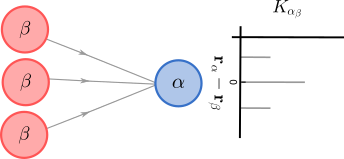
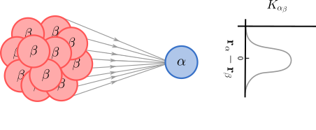

Mechanistic Model
Consider a feedforward input-output system, consisting of three identical input cells, with theirs center at \( \mathbf{r}_{\beta_1}, \mathbf{r}_{\beta_2}\) and \(\mathbf{r}_{\beta_3}\), and one output cell at \(\mathbf{r}_{\alpha}\).

Feedforward circuits where several cells inputs one output cell with a finite number of input cells the coupling function is a discrete spatial function.
It is clear that the activity of the output cell will depend on the activity of the input cells. By using the linear descriptive model as inspiration we can relate the response of the output cell to that of the input cells:
\begin{align} R_\alpha(\mathbf{r}_\alpha,t) = R_{0,\alpha} + \sum_j \int_\tau K_{\alpha \beta}(\mathbf{r}_{\alpha} - \mathbf{r}_{\beta_j}, \tau) R_\beta(\mathbf{r}_{\beta_j},t - \tau) \mathrm{d}\tau, \end{align}
where the sum goes over all input cells and \(R_{0,\alpha}\) accounts for any background firing that may occur when there is no input (assumed to be stationary). The couplings function \(K_{\alpha\beta}(\mathbf{r}_{\alpha} - \mathbf{r}_{\beta}, \tau)\) denotes the sign and strength with which the response of the input cell \(\beta\), at a distance \(\mathbf{r}_{\alpha} - \mathbf{r}_\beta\) from the output cell \(\alpha\), at time \(t-\tau\) influences the response of the output cell at time \(t\). Note that \(K_{\alpha\beta}(\mathbf{r}_{\alpha} - \mathbf{r}_{\beta}, \tau) = 0\) for all values \(\tau < 0\), so that the integral may be taken from \(-\infty\) to \(+\infty\).
If one hypothetically considers a large number of densely and evenly distributed cell inputs (from identical cells) to the output cell, the spatial discrete coupling function can as an approximation be replaced with a spatial continuous coupling function (see figure below).
\begin{equation} R_\alpha(\mathbf{r}_\alpha,t) = R_{0,\alpha}+ \displaystyle\int_{\tau} \iint_\mathbf{r} K_{\alpha\beta}(\mathbf{r}_{\alpha} - \mathbf{r},\tau) R_\beta(\mathbf{r},t - \tau) \mathrm{d}^2\mathbf{r}\mathrm{d}\tau, \end{equation}
An essential assumption underlying equation above is that the couplings function only depends on the relative distance between the cells. This assumption is inspired from the form of the impulse-response function in the descriptive model equation, which is analogous to the equation above. The response of the input cell corresponds here to the stimulus and coupling function corresponds to the impulse-response function.

Feedforward circuits where several cells inputs one output cell, with a large number of densely and evenly distributed cell inputs, the coupling function can be replaced with a spatial continuous function.
Feedforward model
Assume that the output cell recives input from population of cells with different coupling function

A feedforward circuit, where two different populations of densely and evenly distributed cells inputs a single output cell.
Inserting the descriptive model for the response of input cells, gives us
\begin{align} R_\alpha(\mathbf{r}_\alpha,t) &= R_{0,\alpha} +\sum_k\displaystyle\int_{\tau} \iint_\mathbf{r} K_{\alpha k}(\mathbf{r}_\alpha- \mathbf{r}, \tau) R_k(\mathbf{r},t-\tau) \mathrm{d}^2\mathbf{r}\mathrm{d}\tau \\ &= R_{0,\alpha} + \sum_k\displaystyle\int_{\tau} \iint_\mathbf{r} K_{\alpha k}(\mathbf{r}_\alpha- \mathbf{r}, \tau) \bigg( \frac{1}{(2\pi)^3} \displaystyle\iint_\mathbf{k}\int_\omega e^{i(\mathbf{k\cdot \mathbf{r}} - \omega (t-\tau))} {\widetilde{W}_k}(\mathbf{k}, \omega) \widetilde{S} (\mathbf{k}, \omega) \mathrm{d}^2\mathbf{k} \bigg) \mathrm{d}^2\mathbf{r}\mathrm{d}\tau \\ &= R_{0,\alpha} + \frac{1}{(2\pi)^3} \displaystyle\iint_\mathbf{k}\int_\omega e^{i(\mathbf{k\cdot} \mathbf{r}_\alpha - \omega t)} \bigg( \sum_k \widetilde{K}_{\alpha k}(\mathbf{k}, \omega) {\widetilde{W}_k}(\mathbf{k}, \omega) \bigg) \widetilde{S} (\mathbf{k}, \omega) \mathrm{d}^2\mathbf{k}\mathrm{d}\omega \\ &= R_{0,\alpha} + \frac{1}{(2\pi)^3} \displaystyle\iint_\mathbf{r}\int_\tau \bigg( \sum_k K_{\alpha k}(\mathbf{r}_\alpha- \mathbf{r}, \tau) {W_k}(\mathbf{r}_\alpha- \mathbf{r}, \tau) \bigg) S (\mathbf{r}, t-\tau) \mathrm{d}^2\mathbf{r}\mathrm{d}\tau, \end{align}
where \(K_{\alpha k}(\mathbf{r}_\alpha- \mathbf{r}, \tau) \) is the spatio-temporal coupling function between cell \(\alpha\) at \(\mathbf{r}_\alpha\) and a cell at \(\mathbf{r}\) from population \(k\). The expression for the response of the output cell is obtained from a mechanistic model. However, we could also describe the response of the output cell with a descriptive model. By comparing the expression for the response of these two model we can identify the following relationship
\begin{equation} \widetilde{W}_\alpha(\mathbf{k}, \omega) = \sum_k \widetilde{K}_{\alpha k}(\mathbf{k}, \omega) \widetilde{W}_{k}(\mathbf{k}, \omega) \end{equation}
An important observation is that impulse-response function of the output cell \(\alpha\) is independent of the response of the input cells. This applies to arbitrarily complex model circuits as long as the coupling functions are linear and spatially homogeneous.
Note: In the derivation above we have assumed that the background firing in different cells is independent of the activity in other cells. The background firing term \( R_{0,k} \) has therefore been excluded in the response function \( R_k(\mathbf{r},t-\tau) \) of the input cells.
Feedback model

A feedback circuit where different populations of cells inputs output cell, which have a feedback coupling back to the populations.
Consider the circuit shown in the figure above, where different population of cells inputs output cells and also receive feedback from them. The response of an output cell can in this case be written as
\begin{align} R_\alpha(\mathbf{r}_\alpha,t) &= R_{0,\alpha} + \frac{1}{(2\pi)^3} \displaystyle\iint_\mathbf{k}\int_\omega e^{i(\mathbf{k\cdot}\mathbf{r}_\alpha - \omega t)} \bigg( \sum_k \widetilde{K}_{\alpha k}(\mathbf{k}, \omega) {\widetilde{W}_k}(\mathbf{k}, \omega) \bigg) \widetilde{S} (\mathbf{k}, \omega) \mathrm{d}^2\mathbf{k}\mathrm{d}\omega \\ &= R_{0,\alpha} + \frac{1}{(2\pi)^3} \displaystyle\iint_\mathbf{k}\int_\omega e^{i(\mathbf{k\cdot} \mathbf{r}_\alpha - \omega t)} \bigg( \sum_k \widetilde{K}_{\alpha k}(\mathbf{k}, \omega) \widetilde{K}_{k \alpha }(\mathbf{k}, \omega) {\widetilde{W}_\alpha}(\mathbf{k}, \omega) \bigg) \widetilde{S} (\mathbf{k}, \omega) \mathrm{d}^2\mathbf{k}\mathrm{d}\omega, \end{align}
where we have used that
\begin{equation} \widetilde{W}_k(\mathbf{k}, \omega) = \widetilde{K}_{k\alpha }(\mathbf{k}, \omega)\widetilde{W}_\alpha (\mathbf{k}, \omega), \end{equation}
since the populations are driven by the output cells. By comparing the obtained expression with the corresponding expression from the descriptive model, we can identify the following relationship
\begin{equation} \widetilde{W}_\alpha(\mathbf{k}, \omega) = \frac{1}{1 - \sum_k\widetilde{K}_{\alpha k}(\mathbf{k}, \omega)\widetilde{K}_{k\alpha}(\mathbf{k}, \omega) } \end{equation}